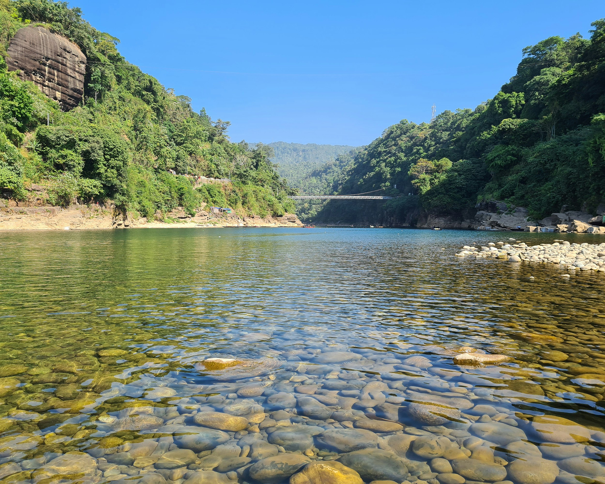

There are many popular attractions in Dhaka that will leave you spoilt for choices during your tour. You can visit the Ahsan Manzil museum to have a glimpse of the Mughal lifestyle and head to Lalbagh Kella that is renowned for its architectural beauty. Dhakeshwari Mandir, The Khan Muhammad Mirza Mosque, and Baitul Mukarram are the most famous spiritual attractions of the city.

Sylhet is home to some of the most iconic sites you should definitely include in your bucket list. You can visit Manipuri Rajbari, a significant piece of Sylhet's architecture, and take a tour of Hakaluki Haor, a marsh wetland ecosystem with a wide range of biodiversity. If you're looking for endless fun and excitement, you can visit Dreamland Park that offers some of the best rides.